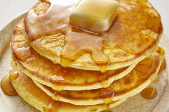

Pancakes

Description
Delicious flour pancakes served with butter and maple syrup.
Ingredients
- 3 cups of flour
- 1/3 cup vegetable oil
- 3 cups milk
- 1 Tbsp baking powder
- 1/2 Tsp salt
- 1/2 Tbsp butter
- 3 Tbsp maple syrup
Steps
- Add 3 cups of flour to a large mixing bowl.
- Mix in 3 cups of milk
- Mix in 1/3 cup vegetable oil
- Mix in baking powder and salt.
- Whip until smooth.
- Heat griddle to 450 degrees.
- Pour batter 1/3 cup at a time onto griddle.
- Cook until pancake has bubbled completely on top. Then Flip.
- Cook other side for about one minute.
- Add butter and syrup and enjoy!